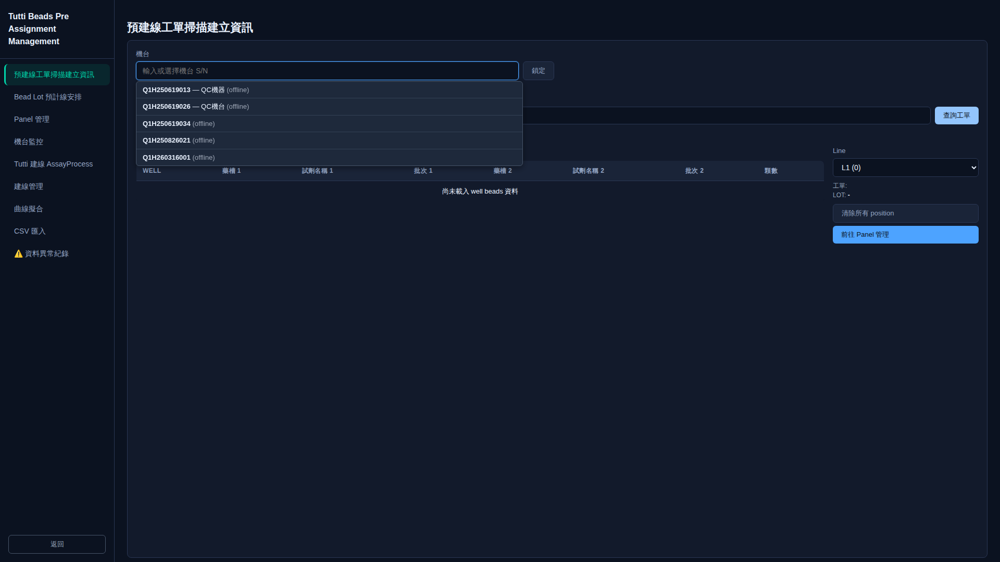
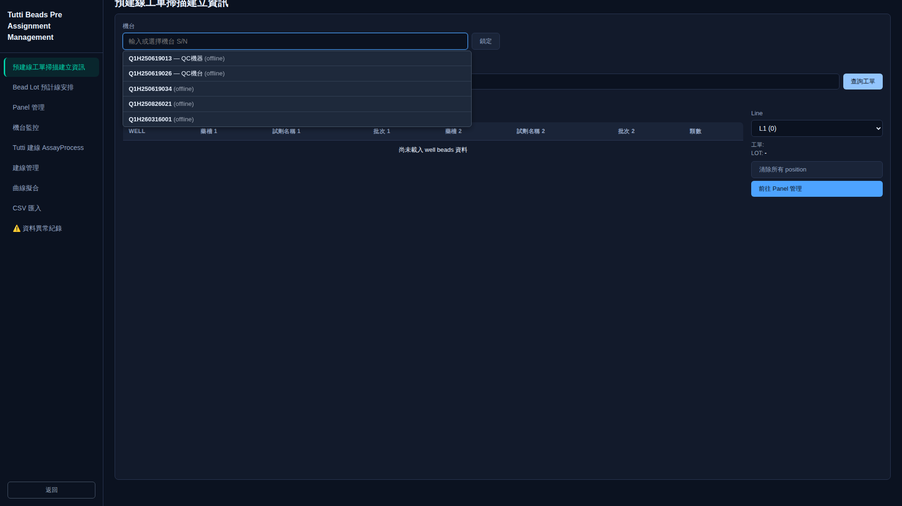

Tutti Beads Pre Assignment Management
本章節說明 Tutti Beads 預建線管理模組的操作方式，包含資料匯入流程、檔案格式要求、以及常見錯誤處理。透過此模組，生產管理人員可將 Tutti Beads 的 OD 讀數資料匯入系統，進行預建線分析與管理。
資料匯入操作
以下為 Tutti Beads 資料匯入的完整操作步驟：
-
Step 1：開啟匯入介面
點擊頁面上方的「匯入」按鈕，系統將開啟匯入 Modal 對話框。

-
Step 2：填寫必填欄位
在 Modal 中填寫必填欄位「Marker 名稱」。此欄位為必填，未填寫將無法執行匯入。

-
Step 3：填寫選填欄位
依需求填寫以下選填欄位：
- 工單號
- Lot d/D/u
- 生產日期
- 填藥期限
- 生產數量
-
Step 4：上傳 Excel 檔案或手動輸入 OD 值
選擇以下其中一種方式輸入 OD 資料：上傳符合格式要求的 Excel 檔案（.xlsx 或 .xls），或直接在表單中手動輸入各 OD 讀數值。

-
Step 5：執行匯入
確認所有欄位填寫完成後，點擊「匯入」按鈕執行資料匯入。系統將驗證資料格式並進行匯入處理。
-
Step 6：確認（Confirm）匯入結果
匯入成功後，系統將顯示匯入結果列表。請確認資料正確無誤後，點擊「Confirm」按鈕完成最終確認。

匯入檔案格式要求
上傳的 Excel 檔案須符合以下格式要求：
- 檔案格式：.xlsx 或 .xls
- 必要標頭：檔案內須包含 L1、L2、N1、N3 等 OD 讀數欄位標頭
- 範本檔案：下載匯入範本檔案
錯誤處理
以下為匯入過程中可能遇到的錯誤情境及處理方式：
未填寫 Marker 名稱
Marker 名稱為必填欄位。若未填寫即點擊匯入，系統將顯示錯誤提示，要求使用者填寫 Marker 名稱後再重新執行匯入。
上傳非 xlsx/xls 格式檔案
系統僅支援 .xlsx 與 .xls 格式的 Excel 檔案。若上傳其他格式（如 .csv、.txt），系統將顯示格式錯誤提示，請重新選擇正確格式的檔案。
csassign 中查無對應 Marker 濃度資料導致回歸線無法計算
當系統在 csassign 資料庫中找不到所選 Marker 對應的濃度資料時，將無法計算回歸線。請確認 csassign 中已正確設定該 Marker 的濃度資料，或聯繫系統管理員進行設定。